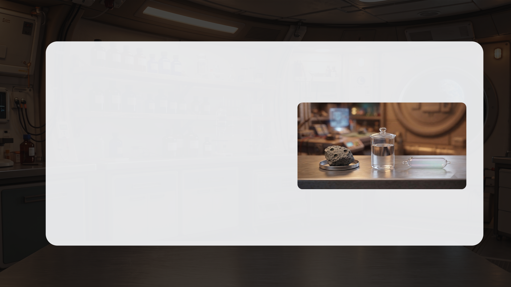
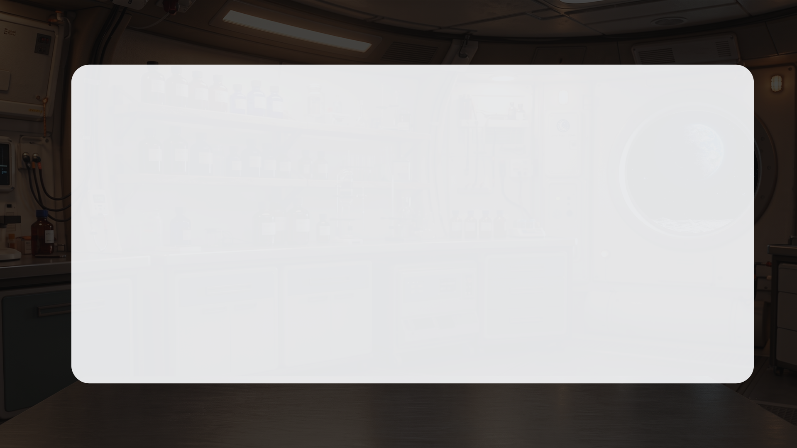
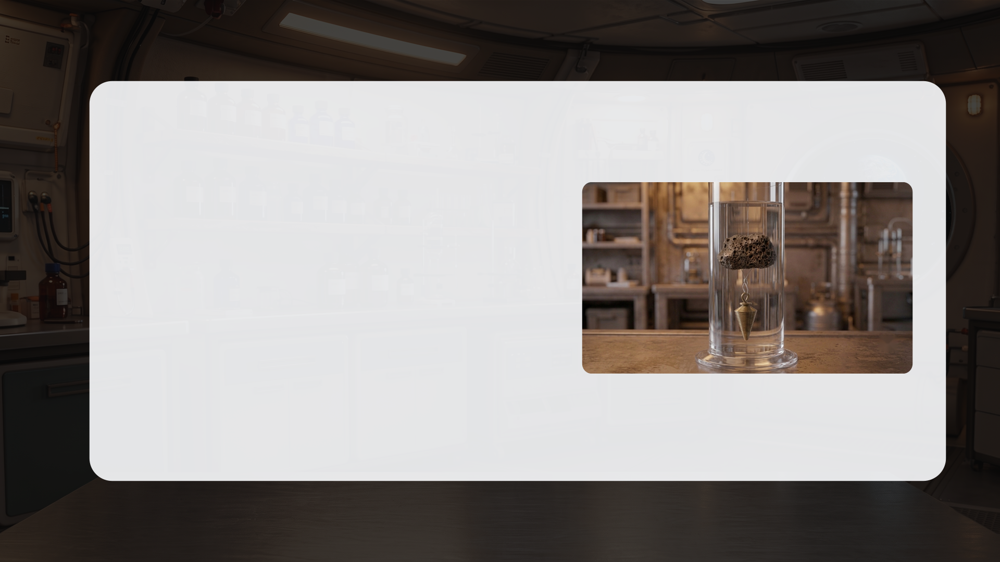
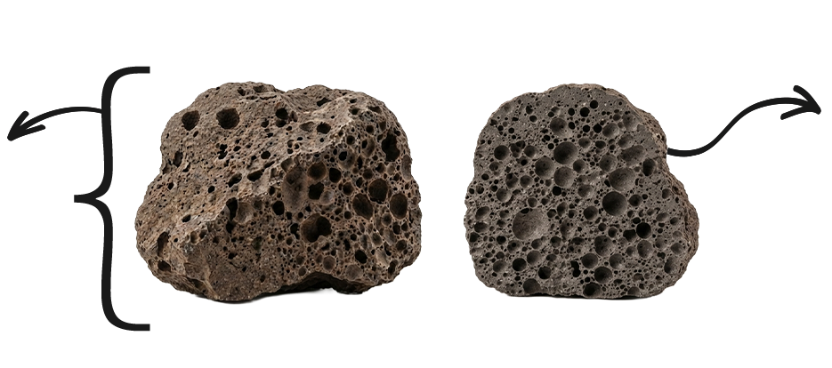
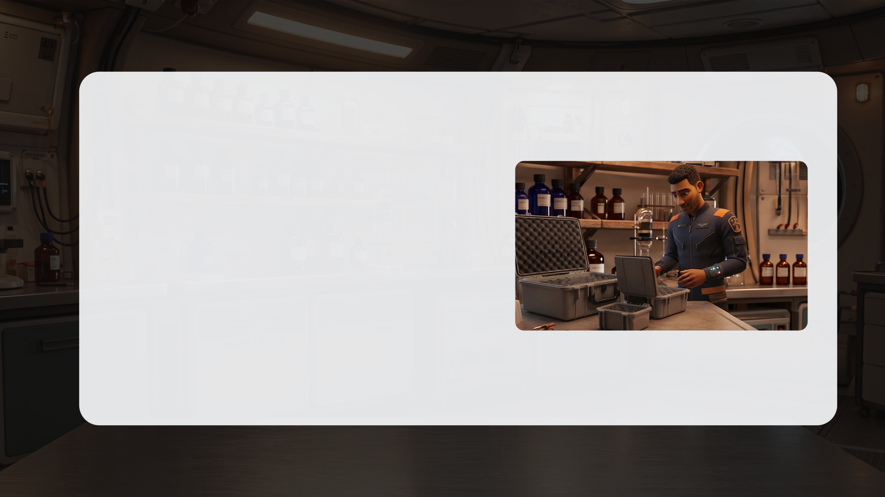
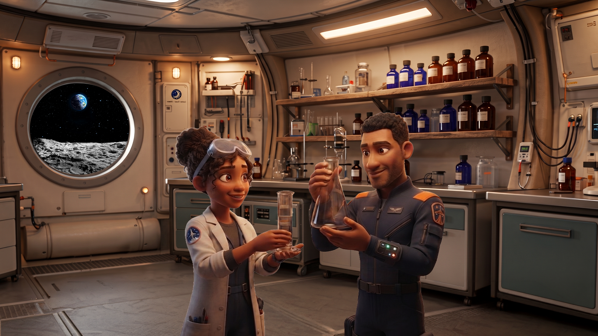
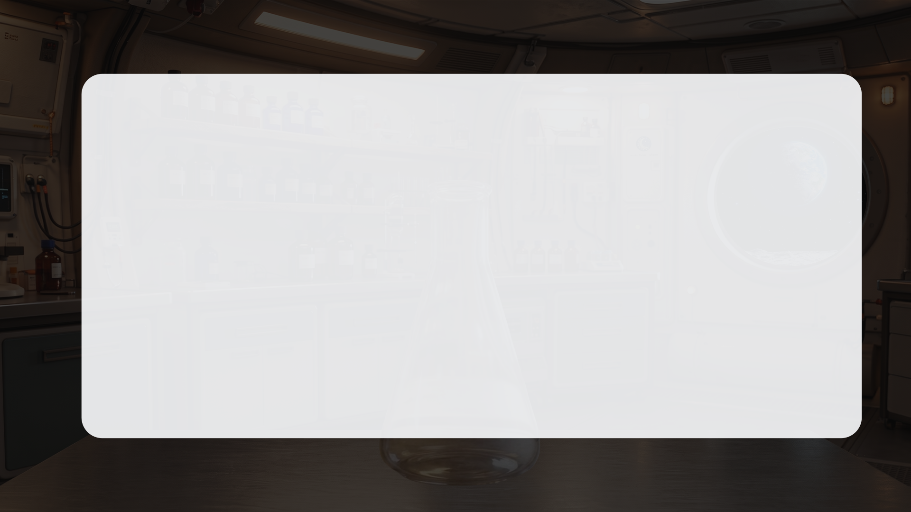
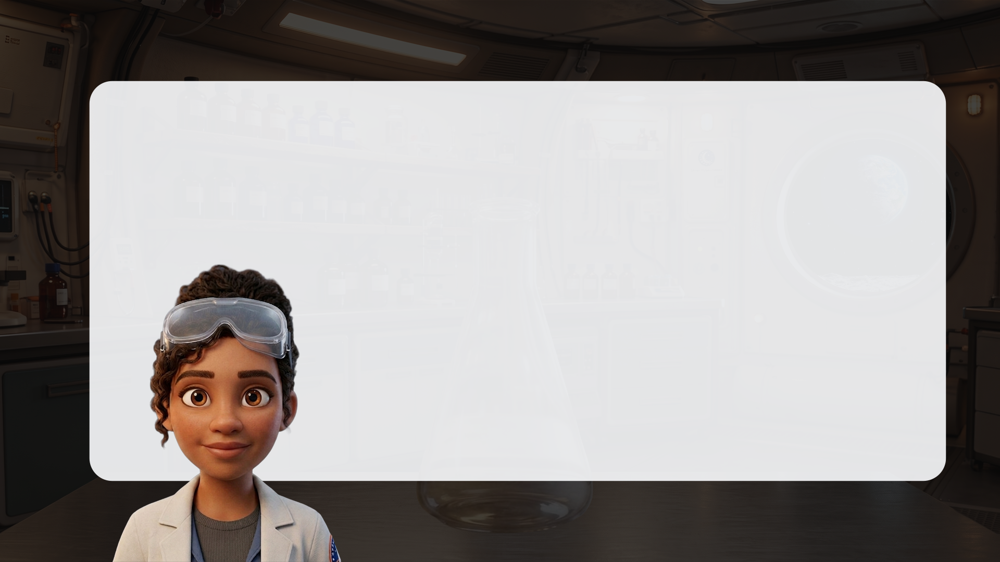

לחצו על כל דגימה כדי לקבל מידע.


בָּזֶלֶת מָארֶה
סלע געשי כהה שנוצר מלבה שהתקררה על פני הירח. הוא מרכיב את האזורים הכהים שעל הירח ועשיר בברזל ומגנזיום.

בָּזֶלֶת נַקְבּוּבִית
סלע בזלתי שיש בו חללים קטנים (״בועות״) שנוצרו כשגזים שהיו בתוך הלבה נלכדו בתוך הסלע בזמן התמצקות הלבה.

אָנוֹרְתוֹזִיט
סלע גבישי בהיר מאוד שנוצר בתקופה קדומה ומרכיב את רוב הרמות הגבוהות של הירח (האזורים הבהירים).

רֶגוֹלִית - אָבָק יְרֵחִי
השכבה העליונה של פני הירח, שמורכבת מאבק, גרגרי סלע ושברי אבנים קטנים שנוצרו במשך מיליארדי שנים מפגיעות של מטאוריטים.


לפני שניגש למכשירי המדידה, בואו נוודא שאנחנו מבינים אילו נתונים נרצה למדוד. נתחיל ב-נפח. זהו המקום שגוף או חומר תופסים במרחב.

שאלה 1:
על השולחן מונחים שלושה כלים: צלחת עליה מונח סלע, כלי זכוכית המכיל מים ושפורפרת המכילה גז מסביבת הירח.
איזה מהם תופס מקום במרחב?
סמנו את התשובה הנכונה.
- רק החומר המוצק - הסלע.
- רק החומר המוצק והחומר הנוזלי - הסלע והמים.
- רק החומר הנוזלי והגז - המים והגז.
- כל שלושת החומרים – לכל חומר בטבע, בכל מצב צבירה, יש נפח.

גם לגז יש נפח. הוא תופס מקום במרחב, גם אם איננו רואים אותו.
המזרק אטום ומלא באוויר.
כשנלחץ על הבוכנה לא נצליח לדחוף אותה עד הסוף בגלל התנגדות האוויר שבמזרק.
כלומר, האוויר הכלוא בו תופס מקום.


לדגימות הסלעים אין צורה הנדסית מוגדרת, לכן נשתמש בשיטת "דחיקת מים" על מנת לחשב את נפחן.


לפני הכנסת הסלע, נפח המים במשורה הוא 80 מ"ל. כשמכניסים את הסלע למים הוא תופס מקום, ולכן מפלס המים עולה. הנפח המשותף של המים והסלע יחד הגיע ל-110 מ"ל. ההפרש בין המפלסים הוא 30 מ"ל, וזהו בעצם הנפח של הסלע.

שאלה 2א:
עזרו לשירה וגל לסדר את שלבי תהליך מדידת הנפח של דגימת הבזלת הנקבובית.
גררו את הפעולות למקומן המתאים בטבלה:

שאלה 2ב:
במדע חשוב לבצע מדידות באופן מדויק ככל האפשר. הסבירו כיצד כל שלב בתהליך מדידת הנפח מסייע לשפר את דיוק תוצאת המדידה.
היעזרו ביישומון שיטת המשקולת שממחיש את שיטת המדידה.
גררו את הנימוק המתאים לכל אחד מהשלבים:


ביצעתי את המדידה בדיוק לפי השלבים שקבעתם. תחילה, מדדתי את המשקולת לבדה – נפחה הוא 15 מ"ל. לאחר מכן, קשרתי אליה את דגימת הסלע הצפה והשקעתי את שניהם יחד במים. הנפח המשותף של שניהם יחד הוא 50 מ"ל.

שאלה 3:
נפח המשקולת לבדה: 15 מ"ל. הנפח המשותף של המשקולת והדגימה: 50 מ"ל. עזרו לשירה לחשב מהו נפח דגימת הסלע הצפה בלבד,
סמנו את התשובה הנכונה:
- 40 מ"ל
- 55 מ"ל
- 35 מ"ל
- 15 מ"ל


לבזלת הזו יש המון חללים פנימיים.
במקרה כזה, נבחין בין שני מושגים:


שאלה 4:
מדדנו את נפח הגוף של דגימת הבזלת הנקבובית ומצאנו שהוא 35 מ"ל.
נפח החומר הסלעי בלבד (ללא החללים) הוא 28 מ"ל.
באיזה נתון גל צריך להשתמש כדי לתכנן קופסה שתתאים לגודל הסלע?
סמנו את התשובה הנכונה:
- נפח הגוף השלם (35 מ"ל) - כי זה המקום שהדגימה כולה תופסת באחסון.
- נפח החומר הסלעי (28 מ"ל) - כי רק החומר המוצק חשוב.
- נפח החללים (7 מ"ל) - כי צריך להשאיר מקום לאוויר.
- ממוצע של שני הנתונים (31.5 מ"ל) - כדי להיות בטוחים.


שירה, ראיתי שחישבת ומצאת שנפח החללים בסלע הוא 7 מ"ל. אכתוב בדוח המדעי שבתוך הסלע כלוא גז מהירח בנפח של 7 מ"ל.

חכה רגע, גל. בוא נחשוב כמו מדענים. האם הנתון שנפח החללים בסלע שווה ל-7 מ"ל מאפשר לנו לקבוע בוודאות כי בסלע כלוא גז מהירח?
שאלה 5:
גל טוען שבתוך הסלע כלוא גז מהירח בנפח 7 מ"ל. האם הטענה של גל מבוססת מדעית על סמך הנתון הקיים?
סמנו את התשובה הנכונה:
- כן, מכיוון שהסלע נמצא על הירח, ברור שהחללים שבתוכו חייבים להיות מלאים בגז ירחי.
- לא, הנתון מוכיח שיש חללים בנפח של 7 מ"ל, אך לא ניתן להסיק מכך שבחללים יש גז כלוא.
- כן, מכיוון שחישוב הנפח (35 מ"ל פחות 28 מ"ל) הוא מדויק, המסקנה לגבי הגז הכלוא חייבת להיות נכונה.
- לא, אי אפשר להסיק מסקנה מהנתון הקיים עד שלא נמדוד את הנפח של הסלע פעם נוספת.


הגענו לדגימה האחרונה - הרֶגוֹלִית (אבק הירח).
החומר נשפך ומקבל את צורת הכלי ממש כמו מים.
לדעתי זהו נוזל, אפשר פשוט למזוג אותו למשורה ריקה
ולמדוד את נפחו.

חכה רגע, גל. בוא נסתכל מקרוב.
כל גרגר אבק הוא למעשה פיסת סלע קטנה וקשיחה.
העובדה שהאבקה נשפכת לא הופכת אותה לנוזל.
מבט מבעד
למיקרוסקופ

שאלה 6:
עזרו לגל ושירה להחליט: מהו מצב הצבירה של אבקת הרגולית, וכיצד נמדוד את נפחה. לפניכם מספר היגדים המתארים את הרגולית,
סמנו את כל ההיגדים הנכונים:
- הרגולית היא חומר נוזלי, מכיוון שהיא נשפכת ומקבלת את צורת הכלי.
- הרגולית היא חומר מוצק - למרות שהיא נשפכת, היא מורכבת מגרגרים קשיחים שאינם משנים את צורתם לצורת הכלי.
- אם נדחס את גרגרי הרגולית במשורה, הנפח הנמדד של האבקה יקטן.
- כשמודדים נפח של אבקה (כמו הרגולית) במשורה - הנפח הנמדד הוא הנפח של הגרגרים בלבד, ללא הרווחים.
- כשמודדים נפח של אבקה (כמו הרגולית) במשורה - חלק מהנפח הנמדד הוא הרווחים שבין גרגרי האבקה.


שירה, מצאתי את הבקבוק הזה,
אולי אוכל לעזור לך
במדידת הנפחים של הרגולית?

אני אשמח, אבל לפני כן נצטרך
לכייל את הבקבוק שמצאת.

מה זה לכייל?


כיול הוא הפעולה של הפיכת כלי לכלי מדידה. כדי להפוך את הבקבוק שהבאת
לכלי מדידה נצטרך להוסיף לו שְׁנָתוֹת (קווים) שיסמנו את הנפח בתוך הכלי.

בקבוק קוני – ארלנמאייר -
כלי בעל צורה משתנה - רחב
בבסיס ונעשה צר לכיוון הקצה.


לחצו כדי לסמן שְׁנָתוֹת ולכייל את הארלנמאייר

שאלה 7א:
הסבירו לגל כיצד עליו לסמן את השְׁנָתוֹת על הבקבוק שמצא. לפניכם שלבי תהליך הכיול של הבקבוק.
גררו כל שלב אל המקום הנכון:

שאלה 7ב:
השלימו את החסר באופן הנכון:
אותו הנפח (למשל 10 מ"ל) יכנס בגבהים בכלים שונים. הכל לפי צורת הכלי.
הקו שמסמן 10 מ"ל במשורה הצרה יהיה קו שמסמן את אותם 10 מ"ל בבקבוק הרחב.
גודל הרווחים בין השְׁנָתוֹת משתנה אף הוא בהתאם לצורת הכלי – בכלי ההולך ונעשה צר הרווחים בין השְׁנָתוֹת .
ככל שעולים למעלה, לכיוון פתח הבקבוק, הרווחים .


מדדנו בעזרת הכלי שכיילנו את נפח הרגולית ומצאנו כי נפחה 40 מ"ל, בואו נוסיף זאת לדוח הנתונים.


הנפח של שלוש דגימות הסלע האלה זהה, אך נראה כי כמות החומר שבדגימת סלע הבזלת גדולה יותר.

לא בהכרח, גל.
מדענים לא קובעים כמות חומר
על סמך מראה עיניים, אלא
על פי מידות מדויקות.

שאלה 8:
האם שירה צודקת? בהנחה שנפח הדגימות זהה, האם אפשר להסיק שיש להן גם אותה מסה (כמות חומר זהה)?
סמנו את התשובה הנכונה:
- כן, נפח זהה של הדגימות מעיד על מסה זהה, כי הן תופסות בדיוק את אותו המקום.
- לא, נפח מתאר רק את המקום שהגוף תופס במרחב, כמות החומר דורשת מדידה נפרדת.
- כן, אבל רק בתנאי שיש לשתי הדגימות בדיוק את אותה הצורה החיצונית.
- לא, כי המסה של הדגימות תשתנה ברגע שהדגימות יגיעו לכדור הארץ מהחלל.
כל הכבוד! סיימתם את הלומדה
הציון שלכם: 0 מתוך 100
הציון נשלח בהצלחה.